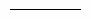
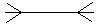

Modelagem de Dados
Na modelagem, ou seja, descrição, um banco de dados pode ser dividido em quatro níveis de abstração:
Onde se representa textualmente os dados que serão armazenados no banco de dados.
Através do uso do Diagrama Entidade-Relacionamento (DER), é possível fazer a representação gráfica dos dados a serem armazenados no banco de dados. À essa representação dá-se o nome de modelo conceitual.
O SGBD não suporta diretamente este modelo, faz-se, então, necessária sua conversão em outro modelo: no lógico.
Através do uso do Modelo Entidade-Relacionamento (MER), é possível fazer a representação gráfica dos dados a serem armazenados no banco de dados. À essa representação dá-se o nome de modelo lógico.
Aqui há o detalhamento físico das estruturas dos dados que serão armazenados no banco de dados. Sua implementação depende da escolha de[ qual SGBD será utilizado.
Modelo de Dados Relacional
O modelo de base de dados relacional é o mais utilizado hoje em dia, pois além de ser mais fácil se comparado aos outros modelos (como o hierárquico e de rede), o SGBD processa os dados de forma eficiente, otimizando as consultas.
Esse modelo faz uso fundamental de tabelas (também chamadas relações). Cada linha (registro) de uma tabela é chamada de tupla. A quantidade de colunas que uma tabela possui constitui o grau da relação. O número de tuplas de uma tabela constitui sua cardinalidade. E por sua vez, cada campo da tabela é chamado de atributo.
Na relação (tabela) acima há:
O valor de cada atributo numa relação deve ser atômico, ou seja, único, individual. Exemplo:
Numa mesma relação não podem haver duas ou mais colunas com o mesmo nome.
As tuplas devem ser distintas, ou seja, não podem existir duas ou mais tuplas com todos os seus atributos (campos) iguais. Essa é a definição da integridade de identidade.
Quando o valor de um atributo é desconhecido, o valor especial null pode ser utilizado.
Cada relação (tabela) deve ter um nome único, para que se evite problemas, como, por exemplo, não se saber qual tabela está sendo referenciada quando há duas ou mais relações com o nome "empregado".
Relacionamento 1:N (lê-se 1 para N)
Nesse exemplo, o relacionamento entre farmácia e produto é 1:N (1 para N), ou seja, uma farmácia pode ter vários produtos (N) e um produto só pode estar em uma única farmácia (1). O relacionamento entre farmácia e farmacêutico é também de 1:N, pois a farmácia pode ter vários farmacêuticos (N) e um farmacêutico só pode trabalhar em uma única farmácia (1).
Relacionamento N:1 (lê-se N para 1)
Um cliente pode participar de várias vendas, mas uma venda só terá o nome de um cliente (na nota fiscal, por exemplo).
Relacionamento 1:1 (lê-se 1 para 1) 
Um paciente só pode ter um prontuário e um prontuário pertence a somente um cliente.
Relacionamento N:N (lê-se N para N) 
Um autor pode escrever vários livros e um livro pode ser escrito por vários autores.
Nesse caso o relacionamento é de N:N. Há também os relacionamentos N:1, 1:N e 1:1.
1.Traduzir entidades e atributos. Exemplo:
2.Traduzir relacionamentos e atributos. Exemplo:
A chave primária sempre se desloca da entidade com cardinalidade 1 para a de cardinalidade N!
Tradução de relacionamento N:N = Nesse caso, uma entidade associativa (tabela) será criada. Essa ova entidade terá como suas chaves primárias as chaves primárias das outras duas entidades. Exemplo:
3.Traduzir generalização/especialização
Para traduzir:
Atividade de Fixação
No intuito de fixar a aprendizagem iniciada por meio deste módulo e verificar como esta sua compreensão sobre os mesmos são sugeridos alguns exercícios de fixação para serem resolvidos. Clique no link den exercício ao lado, pois será por meio dela iniciada a lista de exercício sobre os conteúdos estudados até este momento. Boa revisão sobre os mesmos!!